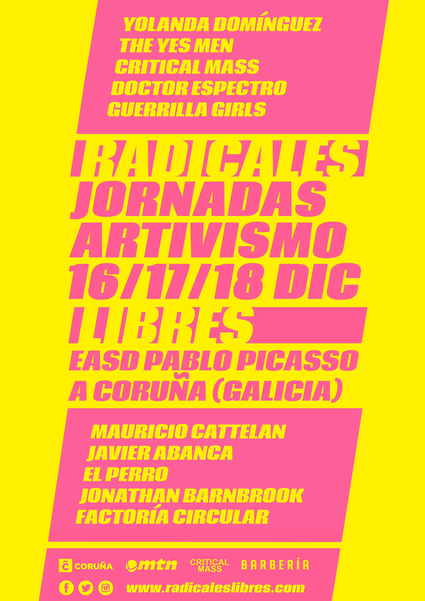
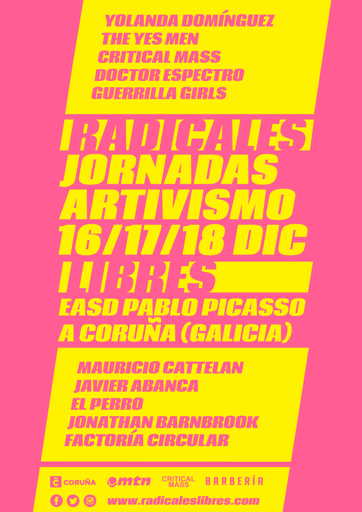
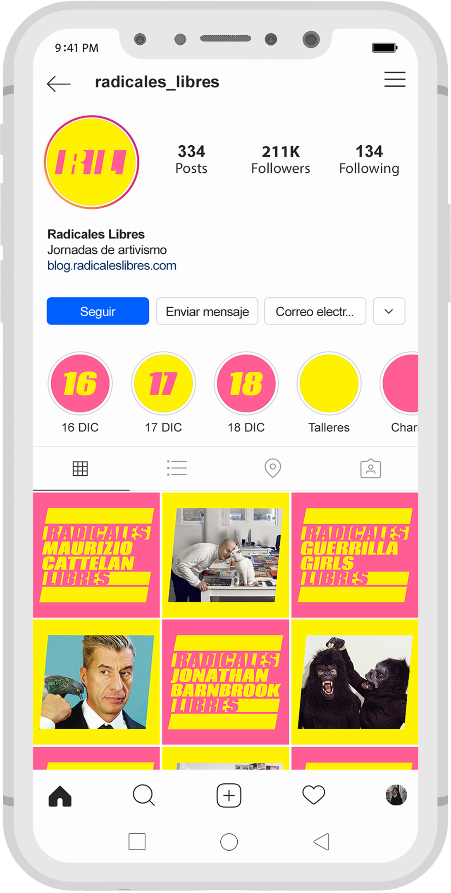
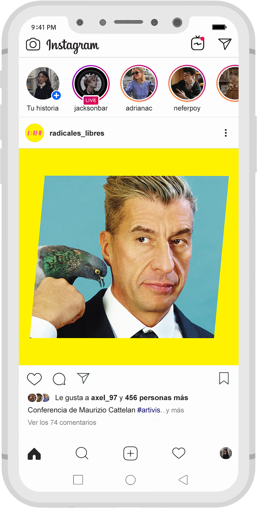
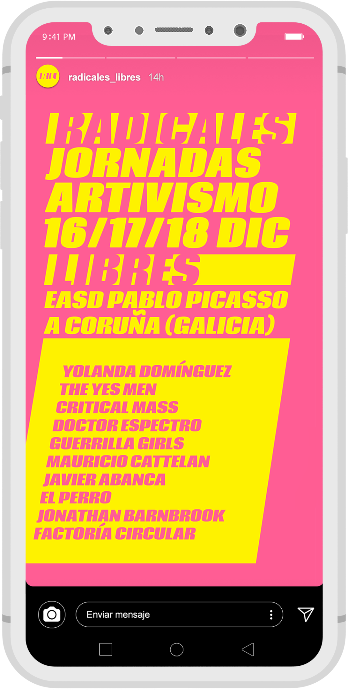
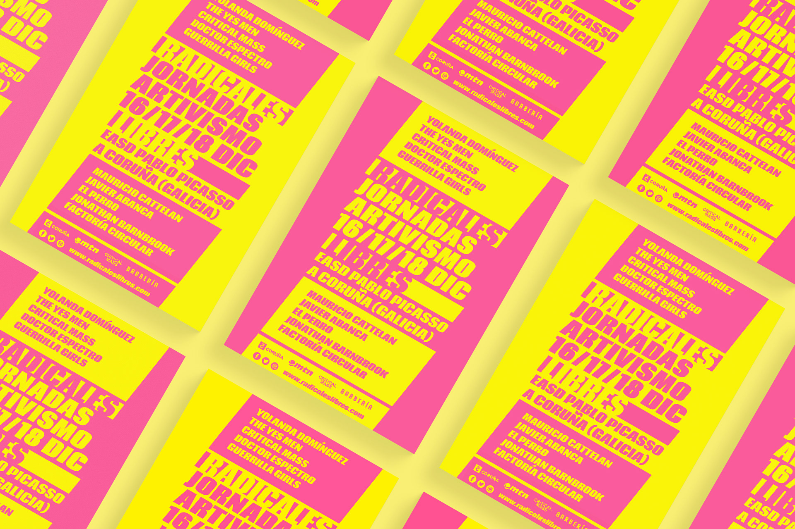

RADICALES LIBRES
Identidad corporativa – 2020
Radicales libres es una feria de artivismo celebrada anualmente en A Coruña, Galicia. En ella se llevarán a cabo charlas, propuestas, acciones y talleres con autores y/o colectivos que destacan en esta disciplina.
El artivismo no es un arte oposicional (no trata de criticar u oponerse sistemáticamente a nada), sino que trabaja con imágenes alternativas, metáforas, ironía, humor, provocación o compasión para generar un proceso informativo. Lo que lo distingue del arte político es el carácter progresivo, en desarrollo, que lleva a trabajar dentro de los contextos, a implicarse directamente en el espacio social público y a representar en contacto directo con los receptores.










Descubre más proyectosde diseño gráfico y web